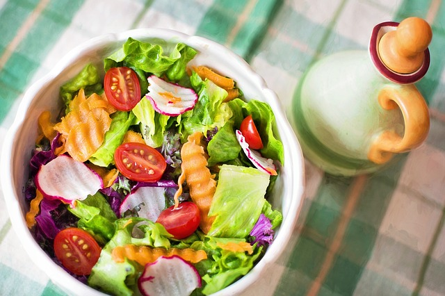

Salad

The salad is, in general terms, a dish that combines cold vegetables (such
as lettuce, arugula or spinach) and various cut, mixed and dressed
vegetables - mainly with salt, vegetable oil and vinegar - to which other
foods are usually added.
Ingredients
- 6 fresh tomatoes
- 1 tender lettuce
- 3 eggs
- 2 carrots
- 1 clove garlic
- 1 spring onion
- 8 prawns
- 1 can of tuna
- 1 green pepper
- 1 large roasted bell pepper (red or yellow)
- 1 pinch of oregano
- 1 pinch of salt
- 1 squirt of Vinegar
- 1 jet of virgin olive oil
Steps
-
To prepare this salad, all the vegetables must be washed well and the
eggs cooked.
-
The tomatoes are then peeled and finely chopped with a knife. The same
should be done with onions, green pepper and roast, and lettuce. All
these ingredients are placed in a bowl, large plate or salad bowl. Tip:
You can add more ingredients to taste like corn or cucumber.
-
When the eggs are cooked, they are chopped and added to the rest of the
ingredients. Then, the carrot and garlic cloves are grated, the peeled
prawns are incorporated, salt, vinegar and oil are added to taste. Add
the tuna, drained or not, according to our personal taste. Tip: The
prawns can be cooked or grilled.
-
The mixed vegetable salad with egg and tuna is mixed well and served. It
can be eaten as a single dish during dinner, or accompanied with a
grilled chicken breast.